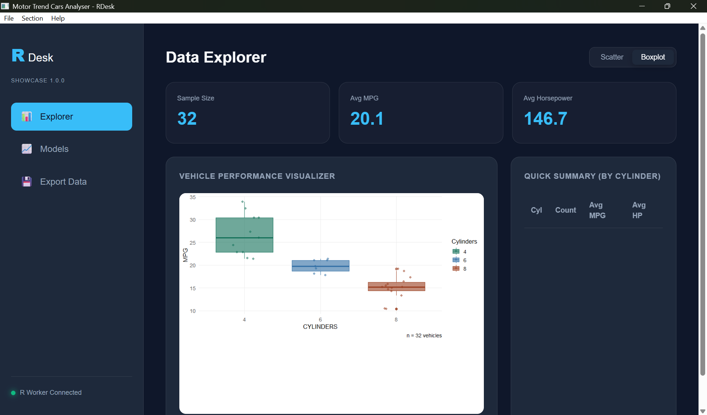
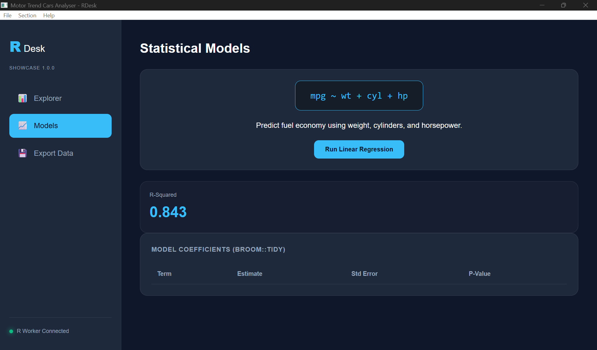

# Build a valid IPC message envelope
msg <- RDesk::rdesk_message("get_data", list(filter = "cyl == 6"))
str(msg)
#> List of 5
#> $ id : chr "msg_178850087757.528_1_7227951"
#> $ type : chr "get_data"
#> $ version : chr "1.0"
#> $ payload :List of 1
#> ..$ filter: chr "cyl == 6"
#> $ timestamp: num 1.79e+09Copy-paste recipes for the most common RDesk patterns.
Load a CSV with a file dialog
app$on_message("load_file", function(payload) {
path <- app$dialog_open(
title = "Open CSV",
filters = list("CSV files" = "*.csv")
)
if (is.null(path)) return(invisible(NULL))
df <- utils::read.csv(path, stringsAsFactors = FALSE)
app$send("file_loaded", list(
rows = nrow(df),
cols = names(df),
filename = basename(path)
))
})Render a ggplot2 chart


app$on_message("get_chart", async(function(payload) {
p <- ggplot2::ggplot(mtcars,
ggplot2::aes(wt, mpg, colour = factor(cyl))) +
ggplot2::geom_point(size = 3) +
ggplot2::theme_minimal()
list(chart = rdesk_plot_to_base64(p))
}, app = app))Show a toast notification
app$toast("File saved successfully", type = "success")
app$toast("Could not connect", type = "error")
app$toast("Update available", type = "info")Save a file with a dialog
app$on_message("export_csv", function(payload) {
path <- app$dialog_save(
title = "Save CSV",
filters = list("CSV files" = "*.csv"),
default_name = "export.csv"
)
if (is.null(path)) return(invisible(NULL))
write.csv(mtcars, path, row.names = FALSE)
app$toast(paste("Saved to", basename(path)), type = "success")
})Add a native menu
app$on_ready(function() {
app$set_menu(list(
File = list(
"Open..." = function() app$send("load_file", list()),
"Export..." = function() app$send("export_csv", list()),
"---",
"Exit" = app$quit
),
View = list(
"Refresh" = function() app$send("refresh", list()),
"Dark mode" = function() app$send("toggle_theme", list())
),
Help = list(
"About" = function() {
app$toast("MyApp v1.0.0 -- built with RDesk", type = "info")
}
)
))
})Check for and install updates
# In app.R, before app$run()
rdesk_auto_update(
current_version = "1.0.0",
version_url = "https://yourserver.com/latest.txt",
download_url = "https://yourserver.com/MyApp-setup.exe",
app = app
)Host a plain text file at version_url containing only
the latest version string, e.g. 1.1.0. RDesk checks it
silently on launch and installs the update if a newer version is
available.
Handle errors gracefully
Detect if running as a built app vs dev mode
if (rdesk_is_bundle()) {
# Running as distributed exe
data_path <- file.path(getwd(), "data", "config.json")
} else {
# Running in development via source("app.R")
data_path <- file.path(app_dir, "data", "config.json")
}Share large datasets across async workers with mori
If your app loads a large dataset and multiple async handlers access it repeatedly, the default RDesk pattern serialises the full dataset to every worker on every call. For a 200 MB data frame, that is 200 MB of copying.
mori eliminates this by
placing the object once in OS-level shared memory (Win32 file mapping on
Windows). Every async() worker then maps the same physical
pages via R’s ALTREP framework - transmitting ~300 bytes instead of the
full dataset.
Before - data serialised to every worker on every call:
large_df <- utils::read.csv("clinical_data.csv") # 200 MB
app$on_message("analyse", async(function(payload) {
# large_df is fully serialised to this worker every time
result <- run_model(large_df, payload$params)
list(result = result)
}, app = app))After - data placed in shared memory once, workers map it directly:
if (requireNamespace("mori", quietly = TRUE)) {
large_df <- mori::share(utils::read.csv("clinical_data.csv"))
} else {
large_df <- utils::read.csv("clinical_data.csv")
}
app$on_message("analyse", async(function(payload) {
# large_df arrives as ~300 bytes; worker maps the same physical RAM
result <- run_model(large_df, payload$params)
list(result = result)
}, app = app))The async() wrapper requires no changes - mori’s ALTREP
objects serialise as their shared memory handle rather than their
contents, so the integration is transparent to RDesk internals.
Why the numbers matter:
Benchmarks show a ~42% wall-clock improvement on repeated parallel operations against large shared data (8.6 s → 5.0 s across 8 workers). For RDesk applications doing repeated asynchronous analysis on large datasets, this integration significantly reduces serialization latency.
Install mori:
install.packages("mori") # CRAN, v0.2.0+Constraints:
- Workers must run on the same machine - mori shares RAM, not network bytes. This is not a limitation for RDesk, which is a single-machine desktop tool.
- Shared memory is garbage-collected automatically when the last R reference is dropped - no manual cleanup required.
- Requires R >= 4.3.
See also: mori documentation